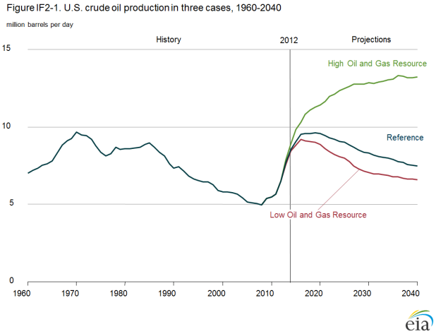
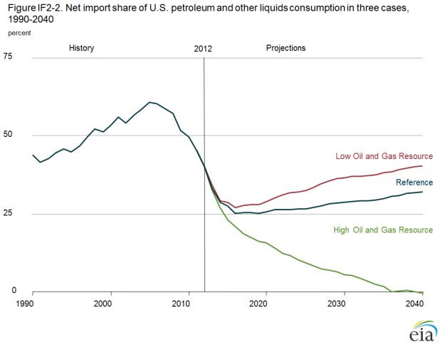
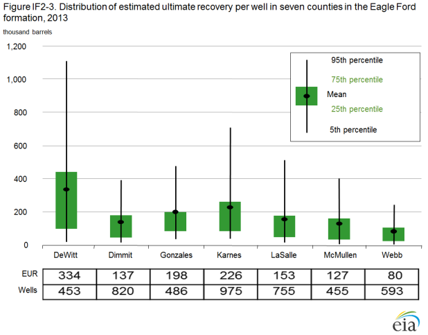
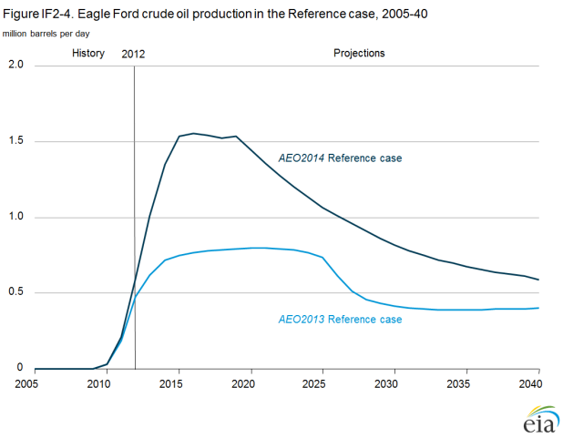

U.S. tight oil production: Alternative supply projections and an overview of EIA’s analysis of well-level data aggregated to the county level
Release Date: 4/07/14
U.S. production of tight oil has increased dramatically in the past few years, from less than 1 million barrels per day (MMbbl/d) in 2010 to more than 3 MMbbl/d in the second half of 2013 [1]. The Annual Energy Outlook 2014 (AEO2014) Reference case reflects continued growth in tight oil production. However, growth potential and sustainability of domestic crude oil production hinge around uncertainties in key assumptions, such as well production decline, lifespan, drainage areas, geologic extent, and technological improvement—both in areas currently being drilled and in those yet to be drilled. As a result, High and Low Oil and Gas Resource cases were developed to examine the effects of alternate resource and technology assumptions on production, imports, and prices.
The projected trends in oil production vary tremendously in the alternative cases, and those trends hold important implications for the United States. In the High Oil and Gas Resource case, growth in tight oil production continues for a longer period of time than projected in the Reference case. Domestic crude oil production increases to nearly 13 MMbbl/d before 2035 in the High Oil and Gas Resource case, and net U.S. oil imports decline through 2036 and remain at or near zero from 2037 through 2040. The Low Oil and Gas Resource case reflects uncertainty about tight oil and shale crude oil and natural gas resources that leads to lower domestic production than in the Reference case. In this case, production reaches 9.1 MMbbl/d in 2017 before falling to 6.6 MMbbl/d in 2040, leading to higher projected dependence on net imports of petroleum and other liquids than in the Reference case. The range of production and imports in these alternative cases, as shown in Figures IF2-1 and IF2-2, illustrates the importance of uncertainty in the resource and technology assumptions.
figure data 
figure data
Policymakers, industry, markets, and the public have great interest in the outlook for future domestic oil production and its key drivers. EIA continues to advance both the quality and transparency of its work in this area. Improvements made to the National Energy Modeling System (NEMS) Oil and Gas Supply Module for AEO2014 enhance its ability to capture rapid growth in tight oil production. Specifically, EIA has implemented a more disaggregated representation of estimated ultimate recovery (EUR) that uses well-level data aggregated to the county level within key producing regions to track the combined effect of technology advances and the changing quality of resources being targeted on production per well, which in turn drives an analysis of EUR for wells in each region. There is still a great deal of uncertainty in the projections of U.S. tight oil production. EIA’s analysis reflects those uncertainties by varying key assumptions regarding the resource base and the rate of technology advances that lower drilling cost or raise its productivity across alternative cases. As new information is gained through drilling, production, and technology experimentation, NEMS projections for tight oil production will continue to evolve.
Improvements in data collection and projections
The domestic oil supply outlook in AEO2014 is based on data derived from measurements at production sites that are available for analysis. Those data provide a basis for improved understanding of the key factors that have contributed to the growth of tight oil production, which has improved the analysis in AEO2014; however, limitations about the use of the data should be taken into account when the Reference case results are examined.
As individual production profiles of wells drilled in tight oil formations are developed and analyzed, they provide a basis for the calculation of a production decline curve and EUR for each well. The results can be used to project potential future production from existing wells and from new wells drilled in the same plays [2].
Production decline curves and the associated EURs for individual wells vary widely across plays, within single plays, and even within discrete sections (counties) of a single play. Using the Eagle Ford formation in Texas as an example, the discussion below examines the methods used to estimate EURs for tight oil wells, the distribution of EURs, the factors that contribute to variations in EURs, and the implications of using county-level representations as the basis for projections of overall production totals both for oil and for natural gas, which is often a coproduct of tight oil production. Uncertainties related to EUR estimation and advances in tight oil production technologies, and their effects on projections of domestic tight oil production in the AEO2014 High and Low Oil and Gas Resource cases, are explored by scaling production decline curves.
Estimating ultimate recovery per well
For each tight well or shale well with initial production in 2008 or later, and with at least four months of production data available, the U.S. Energy Information Administration (EIA) fits monthly production to a decline curve. The mathematical form of the curve is initially hyperbolic [3], but it shifts to exponential when the annual decline rate reaches 10% [4]. The EUR is the sum of actual past production from the well, as reported in the data, and an estimate of future production based on the fitted production decline curve over a 30-year well lifetime.
The actual production curve and the resulting actual ultimate recovery are highly uncertain and cannot be known until the well is plugged and abandoned, which may occur sooner or later than 30 years. Estimates of future production based on the first few months of initial production can differ significantly from later estimates for the same well.
As more months of production are added, the shape of the production curve and the resulting EUR for a given well can change. For example, for one well drilled in Live Oak County in the Eagle Ford formation in Texas, fitting a curve to the first year of monthly production data gave a EUR of 574,000 barrels; using four years of production data gave a EUR of 189,000 barrels for the same well. Conversely, another well in the same county had a EUR of 105,000 barrels based on the first 12 months of production data but 224,000 barrels based on four years of monthly production data. For the wells in the Eagle Ford formation with at least four years of production, EURs based on only the first year of monthly production ranged from as much as 385,000 barrels higher to 173,000 barrels lower than the EURs based on four years of production. Generally, the EUR stabilizes after three years of production, because for many wells in tight formations nearly 50% of the EUR has been produced during that period. EURs based on three years of data differ from EURs based on four years of data by 6,000 barrels on average, with a range of 65,000 barrels higher to 98,000 barrels lower. Because most Eagle Ford wells have been producing for less than three years (Table IF2-1), their EURs are likely to change as more production history is added.
| Vintage year | Number of wells | Average EUR (thousand barrels) |
|---|---|---|
| 2008 | 33 | 36 |
| 2009 | 75 | 57 |
| 2010 | 514 | 117 |
| 2011 | 1,627 | 153 |
| 2012 | 2,717 | 191 |
| 2013 | 418 | 169 |
| All years | 5,384 | 168 |
| Source: Average EUR for wells in the Eagle Ford formation starting production between January 2008 and June 2013 and with at least four months of production: U.S. Energy Information Administration. | ||
County-level representation
The decline curves from all wells in each county, averaged by production month, are used to generate a representative production curve that provides a basis for estimating production from future wells in that county. Wells that are newly drilled, with fewer data points and therefore greater uncertainty in the fit of their decline curves, have a tendency to inflate the average EUR. Older wells, which may have been drilled and completed using technologies and practices that are no longer representative of future practices, tend to pull the average down.
The range of EURs within a given county can be large, as shown in Figure IF1-3 for the seven counties in the Eagle Ford formation that have more than 400 oil and natural gas wells. Some wells have high initial production, but because they have been producing for less than a year, their EURs are highly uncertain. These few high-performing wells raise the county mean EUR above the county median EUR, generally skewing the mean toward the 75th percentile.
figure data
The Eagle Ford formation covers 32 counties in Texas. In 14 of those counties, fewer than 10 wells had been drilled as reported through June 2013. The EUR for counties with little or no drilling is assumed to be equal to the average of the mean estimates from adjacent counties [5]. The Eagle Ford county-level EURs range from more than 300,000 barrels per well (DeWitt county) to less than 25,000 barrels per well (Burleson and Maverick counties), with a mean average of roughly 170,000 barrels per well and a median of 103,000 barrels per well across all the Eagle Ford counties.
The county-level representation derived from well-level data implemented in AEO2014 allows the model to reflect rapid growth in production for plays in the early years of development, when producers focus on developing the most productive wells in the formation’s sweet spots [6], the plateau in production as new drilling offsets the decline in production from older wells, and an eventual decline in production as development moves to less-productive areas (Figure IF1-4). However, there is still a great deal of uncertainty underlying the recovery of tight oil in known plays, as well as the potential for production from additional plays or other layers within a currently productive formation that has not been tested. The application of refinements to current technologies, as well as new technology advances, can also have significant (but uncertain) impacts on the recoverability of tight and shale crude oil.
figure data
High and Low Resource cases
The High and Low Oil and Gas Resource cases in AEO2014 were developed using assumptions that result in higher and lower estimates of technically recoverable crude oil and natural gas resources than those in the Reference case [7]. These cases allow for an examination of the potential impacts of higher and lower domestic supply on energy demand, imports, and prices, but they do not represent upper and lower bounds for future domestic oil and natural gas supply. The two cases are not symmetric; currently, there is more uncertainty about the potential for greater gains in production than about the potential for lower production levels.
The High Oil and Gas Resource case assumes a broad-based future increase in crude oil and natural gas resources, not limited to production of oil and natural gas in tight sands and shales. However, optimism about increased supply has been buoyed by recent advances in the production of crude oil and natural gas from tight and shale formations. With the adjusted resource and technology advance assumptions in the High Oil and Gas Resource case, domestic crude oil production continues to increase to more than 13 MMbbl/d before 2035. Specific assumptions for the High Oil and Gas Resource case, as compared with the Reference Case, include:
- EURs for tight oil, tight gas, and shale gas wells are 50% higher [8]
- Additional tight oil resources as well as 50% lower well spacing (i.e., wells are closer together), with a downward limit of 40 acres per well for existing and potential future tight oil resources, to capture the possibility that additional layers or new areas of low-permeability zones will be identified and developed
- Diminishing returns on the EUR when drilling in a county exceeds the number of potential wells assumed in the Reference case [9], to capture the probability that greater drilling density will cause wells to interfere with each other (i.e., production from one well might reduce production from a nearby well)
- Long-term technology improvements beyond those assumed in the Reference case, represented as a 1% annual increase in the EURs for tight oil, tight gas, and shale gas wells
- More resources in Alaska and in the lower 48 offshore, including the development of tight oil in Alaska and 50% higher technically recoverable undiscovered resources for other Alaska crude oil and the lower 48 offshore (which reflects more favorable resolution of the uncertainty surrounding undeveloped areas where there has been little or no exploration and development activity, and where modern seismic survey data are lacking)
- The development of lower 48 onshore oil shale (kerogen), with production reaching 135,000 barrels per day by 2025.
The High Oil and Gas Resource case does not include exploration or production activity in the Arctic National Wildlife Refuge.
The Low Oil and Gas Resource case reflects only the uncertainty around tight and shale crude oil and natural gas resources—specifically, whether the performance of current and future wells drilled will actually be less than estimated. For the Low Oil and Gas Resource case, the EUR per tight and shale well is assumed to be 50% lower than in the AEO2014 Reference case (by scaling all applicable production decline curves). All other resource assumptions are unchanged from the Reference case.
Effects on domestic crude oil production
The difference in overall production across cases mostly reflects differences in tight oil projections. In the High Oil and Gas Resource case, higher well productivity reduces development and production costs per unit, which results in more and earlier development of tight oil resources than in the Reference case. The greater abundance of tight oil resources in the High Oil and Gas Resource case causes tight oil production to peak later in the projections, at 8.5 MMbbl/d in 2035, compared to the Reference case peak production rate of 4.8 MMbbl/d in 2021. From 2012 through 2040, cumulative tight oil production in the High Oil and Gas Resource case amounts to 75 billion barrels, compared with 44 billion barrels in the Reference case.
In the Low Oil and Gas Resource case, lower estimates of tight oil, tight gas, and shale gas resources result in a U.S. production profile that is both slower and lower than in the Reference case, with tight oil production peaking at 4.3 MMbbl/d in 2016 and then declining through 2040. Cumulative tight oil production from 2012 through 2040 amounts to 34 billion barrels in the Low Oil and Gas Resource case, which is 23% less than in the Reference Case.
Effects on U.S. net imports of petroleum and other liquids
The variations in projected domestic petroleum supply between the Reference case and the High and Low Oil and Gas Resource cases result in significant variations in the share of net imports in total U.S. liquid fuels consumption (Figure IF2-2). The net import share of petroleum and other liquids consumption, which increased steadily from 27% in 1985 to about 60% in 2005, has fallen since 2005, to roughly 40% in 2012. In the Reference case, the share of U.S. petroleum and other liquids consumption met by imports continues declining to 25% in 2016, and then begins a gradual increase starting in 2020, reaching 32% in 2040. The net import share follows a similar trend in the Low Oil and Gas Resource case, falling to 27% in 2016 and then rising to 40% in 2040. In contrast, net import dependence continues to decline through 2036, and it is at or near zero from that point until 2040 in the High Oil and Gas Resource case.
Effects on prices
As a result of higher levels of U.S. crude oil production in the High Oil and Gas Resource case, North Sea Brent crude oil prices are lower than in the Reference case: $125 per barrel (2012 dollars) in 2040, compared with $141 per barrel in 2040 in the Reference case. Lower motor gasoline and diesel prices in the transportation sector encourage more consumption.
In the Low Oil and Gas Resource case, lower levels of domestic crude oil production result in a slightly higher Brent crude oil price than in the Reference case—$145 per barrel (2012 dollars) in 2040. As noted above, because the uncertainty around production increases is greater than the uncertainty around production decreases, assumptions in the Low Oil and Gas Resource case are closer to the assumptions in the Reference case than are the assumptions in the High Oil and Gas Resource case.
Endnotes
- The term tight oil does not have a specific technical, scientific, or geologic definition. Tight oil is an industry convention that generally refers to oil produced from very low permeability shale, sandstone, and carbonate formations, with permeability being a laboratory measure of the ability of a fluid to flow through the rock. In limited areas of some very low permeability formations, small volumes of oil have been produced for many decades.
- A play is defined as a set of known or postulated oil and gas accumulations sharing similar geologic, geographic, and temporal properties, such as source rock, migration pathway, timing, trapping mechanism, and hydrocarbon type.
- The hyperbolic decline curve is given by Qt = Qi / [(1 + bDit)1/b], where Qt is the production volume in time t (in months), Qi is the initial volume at time 0 (the 30-day initial production rate or IP is Q1), Di is the initial decline rate, and b is the hyperbolic parameter (b of 0.001 is basically an exponential decline). Because the reported production in the first month could include 1 to 31 days of actual production, the first-month data are excluded from the fitting routine.
- Of the 6,594 Eagle Ford wells included in the Drillinginfo database, 927 were excluded because they had less than four months of production data—leaving 5,667 to be evaluated through the automated fitting routine. For 95% of the wells, monthly production was fitted successfully to a hyperbolic decline curve.
- Planned future enhancements to this methodology include taking into account any available geologic information (i.e., porosity, depth, thickness, total organic carbon, thermal maturity, and natural fracture density and location) to provide appropriate weights for the adjacent county EURs.
- Sweet spot is an industry term for those selected and limited areas within a play where the well EURs are significantly higher than those for the rest of the play—sometimes as much as 10 times higher than those for the lower production areas within the play.
- The total unproved technically recoverable crude oil resources are 401 billion barrels in the High Oil and Gas Resource case and 180 billion barrels in the Low Oil and Gas Resource case, compared to 209 billion barrels in the Reference case. Total unproved technically recoverable dry natural gas resources are 3,349 trillion cubic feet (Tcf) in the High Oil and Gas Resource case and 1,480 Tcf in the Low Oil and Gas Resource case, compared to 1,932 Tcf in the Reference case.
- This is achieved by scaling the applicable production decline curves upward.
- For this assumption, the initial production rate is increased by 20%, but the decline curve is shifted so that the overall EUR is reduced by 20%.
Comments
Read what others are saying …
04/13/2014 - Australia
Your graphs should show the decline profile in legacy fields using your drilling report data. If there is another credit crunch and drilling stops that will show what's going to happen
04/09/2014 - New York, United States
Dana, Great work and write-up, very informative, in-depth, and comprehensive. Keep up the good work. Appreciate the detail and all the work that went into Reference, High and Low cases. Thanks, Joe Seems like the 'definition' for "PADD" in the above accronym glossary is incorrect, as it is also the one for the Renewable Fuel Standard (RFS).